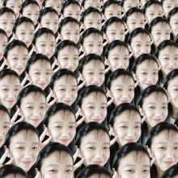

嘿嘿
沙雕图片给人无限快乐
无论是别人的还是自己的
。。。。。
♡ ♡ ♡ ♡ ♡ WELCOME TO MY WORLD ♡ ♡ ♡ ♡ ♡
沙雕图片给人无限快乐
无论是别人的还是自己的
。。。。。
为什么要运动？？
又累又出汗，身上黏黏的
——因为乐意
军训简直是地狱
变成了真 · 黑皮 · 曼
气死我！！！
| Q：如果时间可以倒流，想要回到过去的什么时候？ |
| A：其实我希望赖着不动，重来一次也太累了（主要是不想再挨我妈的竹竿炒肉了） |
| Q：最喜欢的idol（们）？ |
| A：千玺、肖战、彭昱畅还有流星花园的美作...爱当清秀男孩子的妈妈粉！ |
| Q：做过最离奇的梦是什么？ |
| A：梦到自己闭着眼睛和同学打招呼却能看见她的脸，然后我就知道自己在做梦了（微笑） |
| Q：下辈子愿意换一个性别吗？ |
| A：换啊，我吃棒棒糖都不喜欢两次吃一个味儿，换个性别肯定会很好玩（如果还有现在记忆的话） |
| Q：展现一下彩虹屁功力 |
| A：今日份的美貌（帅气）也正常营业了呢，即使是后脑勺也是惊人的美貌，从头发到脚趾都是完美的，是相机也无法承载的美貌啊！ |